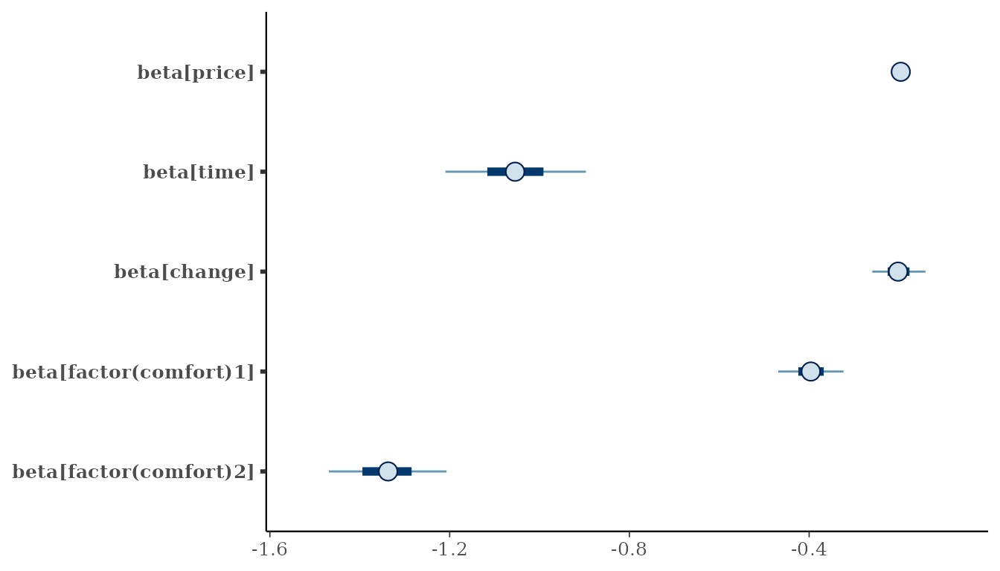
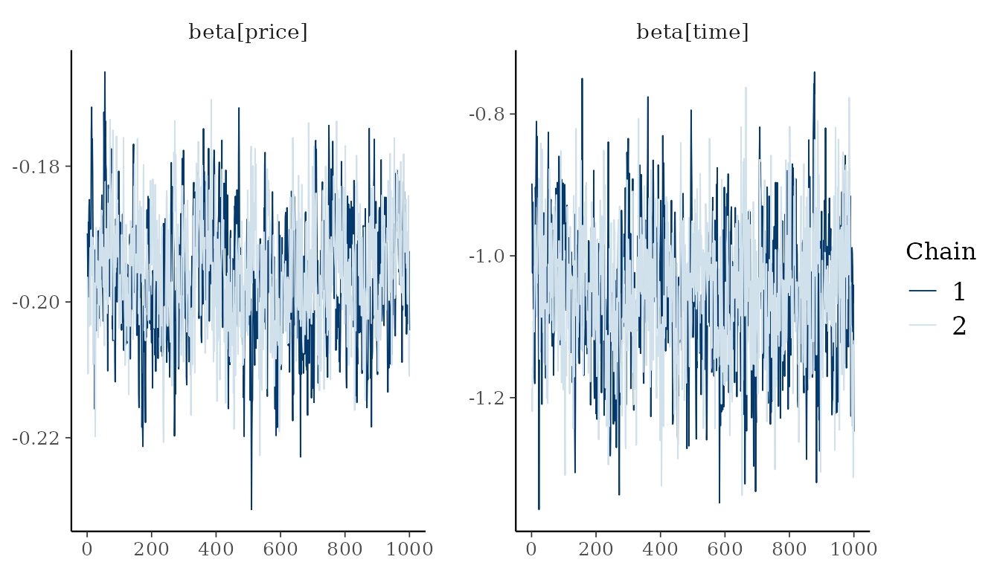
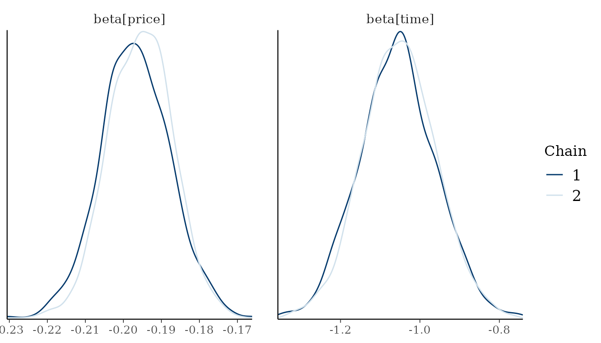
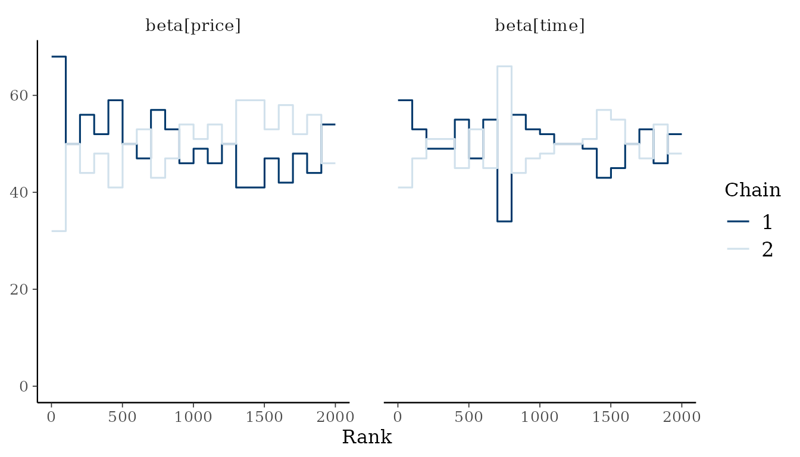
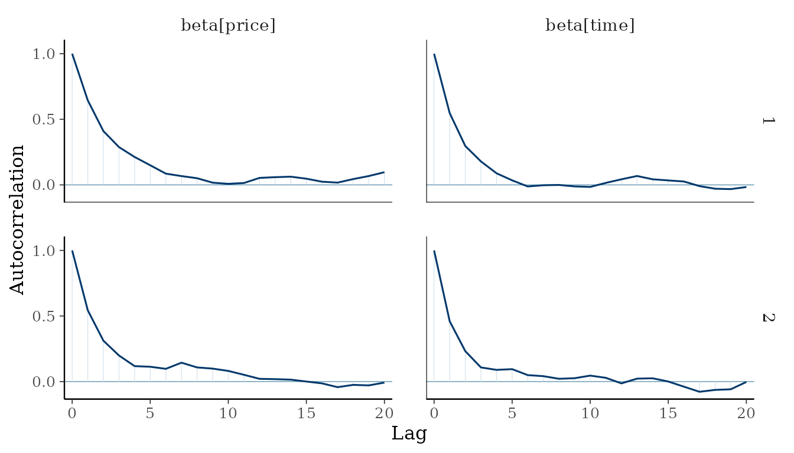
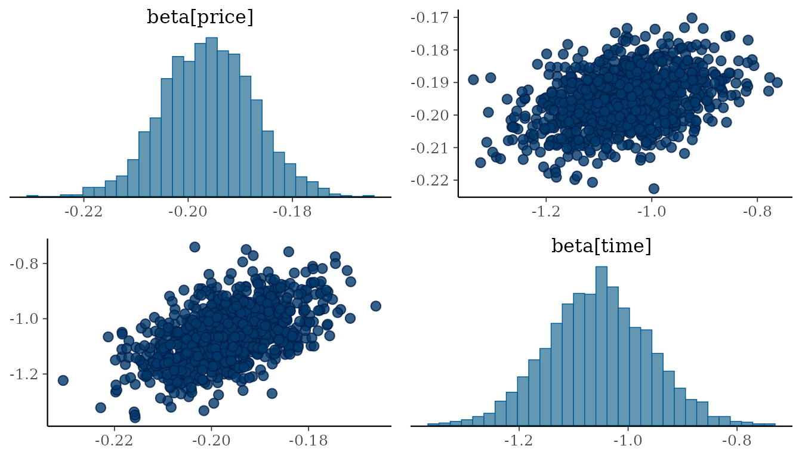

Discrete choice models describe how a decider selects one alternative from a finite set, for example a train connection, an electricity supplier, or a mode of transport (Train 2009). The probability of each alternative is a function of the attributes of the alternatives and the characteristics of the decider. The coefficients of the model quantify the weight of each attribute in the decision, and ratios of coefficients quantify the trade-offs between attributes. RprobitB estimates discrete choice models in a Bayesian probit framework. This vignette fits a basic probit model to panel data from a stated choice experiment and introduces the posterior summaries, convergence diagnostics, and plots on which every analysis with the package relies.
The probit model
Consider deciders , each of whom chooses at occasions one of alternatives . The probit model is a random utility model: it assigns to every alternative the latent utility
where is the vector of covariates assigned to alternative at occasion of decider , is the vector of the coefficients of decider , and is an error term. The error vector of an occasion is multivariate normal with mean zero and the covariance matrix , and it is independent across deciders and occasions. The decider chooses the alternative with the largest utility, , and only this choice is observed, not the utilities. The choice probability of alternative is the probability that its utility exceeds the utilities of all other alternatives,
which is a function of the covariates of the occasion, the coefficients , and the covariance matrix . The choice probabilities are invariant to adding a constant to all utilities and to multiplying all utilities by a positive number, so neither the level nor the scale of the utilities is identified. RprobitB removes the level by taking utility differences with respect to a base alternative and fixes the scale by restricting either one error variance or one coefficient. These two restrictions are the normalization of the model. The coefficient vector is common to all deciders unless random effects are specified, in which case the coefficients of every decider are drawn from a population distribution whose parameters are estimated. The vignette Model specification and variants describes the normalization and the prior distribution, and the vignette Modeling preference heterogeneity the specification of heterogeneous coefficients. Bayesian estimation of the multinomial probit model goes back to McCulloch and Rossi (1994) and Imai and van Dyk (2005), and Oelschläger (2026) gives a unified account of the heterogeneity models that RprobitB implements.
A stated choice experiment on train trips
In 1987, a stated choice experiment commissioned by the Dutch
national railways presented 235 travelers with pairs of hypothetical
train trips and asked which trip of each pair they would choose (Ben-Akiva et al.
1993). The two trips of a pair differ in price, travel time,
number of changes, and comfort class, and every traveler evaluated about
twelve pairs. The mlogit package (Croissant
2020) provides the 2929 choices as the data set
Train. The data are in wide format: one row per choice
occasion, with the attributes of trip A in the columns
ending in _A and those of trip B in the
columns ending in _B. Prices are recorded in cents of Dutch
guilders and travel times in minutes; both are converted to euro and
hours below.
library(RprobitB)
set.seed(1)
data("Train", package = "mlogit")
Train$price_A <- Train$price_A / 100 / 2.20371
Train$price_B <- Train$price_B / 100 / 2.20371
Train$time_A <- Train$time_A / 60
Train$time_B <- Train$time_B / 60
head(Train)
#> choiceid id choice price_A price_B time_A time_B change_A change_B
#> 1 1 1 A 10.89073 18.15121 2.500000 2.500000 0 0
#> 2 2 1 A 10.89073 14.52097 2.500000 2.166667 0 0
#> 3 3 1 A 10.89073 18.15121 1.916667 1.916667 0 0
#> 4 4 1 B 18.15121 14.52097 2.166667 2.500000 0 0
#> 5 5 1 B 10.89073 14.52097 2.500000 2.500000 0 0
#> 6 6 1 B 18.15121 10.89073 1.916667 2.166667 0 0
#> comfort_A comfort_B
#> 1 1 1
#> 2 1 1
#> 3 1 0
#> 4 1 0
#> 5 1 0
#> 6 0 0The model formula names the response and the covariates:
formula <- choice ~ price + time + change + factor(comfort) | 0All four covariates are attributes of the trips with one coefficient
common to both alternatives, which places them in the first part of the
formula. The second part takes characteristics of the decider and the
alternative-specific constants; here it contains only the 0
that removes the constants, which is appropriate because the labels
A and B of the two trips were assigned
arbitrarily and carry no utility of their own. The comfort class is
stored as an integer but is a categorical variable with three levels;
factor(comfort) expands it into dummy variables, as in
lm(). The arguments column_decider and
column_occasion identify the traveler and the choice
occasion. The vignette Model
specification and variants describes the three parts of the formula
and the further arguments of fit().
model <- fit(
formula = formula,
data = Train,
column_decider = "id",
column_occasion = "choiceid",
iterations = 2000,
warmup = 1000,
chains = 2,
progress = FALSE
)
model
#> Bayesian probit choice model
#> Formula: choice ~ price + time + change + factor(comfort) | 0 | 0
#> Data: 235 deciders, 2929 choice occasions
#> Samples: 1000 retained per chain, 2 chainsfit() estimates the model with a Gibbs sampler, a Markov
chain Monte Carlo method that draws the latent utilities and the
parameters in turn from their conditional posterior distributions. The
posterior distribution combines the prior distribution of the
parameters, described in the vignette Model
specification and variants, with the likelihood of the observed
choices. A chain of the sampler consists of iterations
draws. The first warmup of them are discarded, because the
chain first has to move from its starting values into the region of the
posterior, and the remaining draws are retained as the posterior draws
from which every summary below is computed. Several independent chains,
set by chains, sample the same posterior and make it
possible to check convergence, that is, whether the retained draws
represent the posterior distribution.
Posterior summaries
summary() reports the posterior mean, mode, and standard
deviation of every population-level parameter together with the
convergence diagnostics of the posterior package (Bürkner et al.
2026).
summary(model)
#> Bayesian probit choice model
#> Formula: choice ~ price + time + change + factor(comfort) | 0 | 0
#> Samples: 1000 retained per chain, 2 chains
#>
#> variable mean mode sd rhat ess_bulk
#> beta[price] -0.196 -0.196 0.00873 1.01 349
#> beta[time] -1.054 -1.047 0.09503 1.00 596
#> beta[change] -0.201 -0.208 0.03580 1.01 657
#> beta[factor(comfort)1] -0.396 -0.396 0.04300 1.00 800
#> beta[factor(comfort)2] -1.338 -1.320 0.07954 1.01 553The coefficients of price, travel time, and number of changes are
negative, as expected: each of these attributes reduces the utility of a
trip. Comfort is a factor whose level 0 denotes the highest
class, so the negative coefficients of the dummies for levels
1 and 2 quantify the loss of utility in the
lower classes. The error variance of the utility difference,
Sigma[B,B], is absent from the table because the default
normalization fixes it to one.
Because of this normalization, the coefficients are measured in units
of the error standard deviation, and their absolute size has no
substantive interpretation. The ratio of two coefficients is invariant
to the scale and answers a substantive question: which price reduction
compensates a traveler for one additional hour of travel time?
interpret() computes such ratios for every posterior draw
and expresses each effect in units of a reference effect, here the
price:
compensation <- interpret(model, reference = "price")
compensation
#> 1 `time` compensates -5.38 `price` (95% interval -6.18 to -4.51)
#> 1 `change` compensates -1.03 `price` (95% interval -1.37 to -0.677)
#> 1 `factor(comfort)1` compensates -2.02 `price` (95% interval -2.42 to -1.62)
#> 1 `factor(comfort)2` compensates -6.83 `price` (95% interval -7.6 to -6.09)One additional hour of travel time is compensated by a price that is about 5.4 euro lower (at 1987 prices), and the lowest comfort class relative to the highest by a price about 6.8 euro lower.
The last two columns of the summary table are the convergence diagnostics recommended by Vehtari et al. (2021):
-
rhatcompares the variance between the chains with the variance within the chains and equals one when all chains sample the same distribution. -
ess_bulkis the effective sample size for the bulk of the posterior distribution, that is, for its central part around the median as opposed to its tails. Consecutive draws of a chain are correlated, and the effective sample size is the number of independent draws that would estimate the posterior mean or median with the same precision. A few hundred effective draws suffice for these summaries; the precision of extreme quantiles is governed by the tail effective sample size instead.
The arguments probs and statistics select
the columns of the table. probs adds posterior quantiles,
and statistics selects the measures, among them the tail
effective sample size, which governs the precision of the quantiles, and
the Monte Carlo standard error of the mean, which quantifies the
simulation error of the reported posterior mean.
?summary.RprobitB_fit describes each measure.
summary(
model,
statistics = c("mean", "mcse_mean", "ess_bulk", "ess_tail"),
probs = c(0.05, 0.95)
)
#> Bayesian probit choice model
#> Formula: choice ~ price + time + change + factor(comfort) | 0 | 0
#> Samples: 1000 retained per chain, 2 chains
#>
#> variable mean q5 q95 mcse_mean ess_bulk ess_tail
#> beta[price] -0.196 -0.210 -0.182 0.000468 349 811
#> beta[time] -1.054 -1.209 -0.897 0.003890 596 923
#> beta[change] -0.201 -0.260 -0.141 0.001397 657 1251
#> beta[factor(comfort)1] -0.396 -0.469 -0.323 0.001520 800 1186
#> beta[factor(comfort)2] -1.338 -1.469 -1.207 0.003376 553 1056coef() and confint() return posterior means
or medians and equal-tailed credible intervals. The bounds of such an
interval are the posterior quantiles at (1 - level) / 2 and
(1 + level) / 2, so that the interval contains the
parameter with posterior probability level.
coef(model)
#> beta[price] beta[time] beta[change]
#> -0.1961137 -1.0541476 -0.2013516
#> beta[factor(comfort)1] beta[factor(comfort)2]
#> -0.3961042 -1.3382782
confint(model, level = 0.9)
#> 5% 95%
#> beta[price] -0.2101777 -0.1819134
#> beta[time] -1.2093530 -0.8967781
#> beta[change] -0.2596503 -0.1410680
#> beta[factor(comfort)1] -0.4688508 -0.3233941
#> beta[factor(comfort)2] -1.4687676 -1.2068223vcov() returns the posterior covariance matrix of the
parameters:
round(vcov(model), 5)
#> beta[price] beta[time] beta[change]
#> beta[price] 0.00008 0.00037 0.00008
#> beta[time] 0.00037 0.00903 0.00083
#> beta[change] 0.00008 0.00083 0.00128
#> beta[factor(comfort)1] 0.00014 0.00123 0.00024
#> beta[factor(comfort)2] 0.00031 0.00301 0.00061
#> beta[factor(comfort)1] beta[factor(comfort)2]
#> beta[price] 0.00014 0.00031
#> beta[time] 0.00123 0.00301
#> beta[change] 0.00024 0.00061
#> beta[factor(comfort)1] 0.00185 0.00216
#> beta[factor(comfort)2] 0.00216 0.00633An interval plot displays the marginal posteriors: the thick bars cover the central 50% and the thin lines the central 90% of each posterior.
plot(model, type = "interval")
Graphical convergence diagnostics
plot() delegates to bayesplot (Gabry and Mahr
2025). Trace plots show the draws of each chain against their
index, and density overlays compare the marginal posteriors of the
chains; there are two chains here because fit() was called
with chains = 2. For converged chains, the traces are
stationary without trend, and the densities of the chains coincide.


Rank plots are a more sensitive check (Vehtari et al. 2021). The draws of all chains are pooled and ranked, and the histogram of the ranks is drawn for every chain. If all chains sample the same distribution, every chain receives ranks from the whole range with equal frequency, and the histograms are uniform. A chain that remains in a subregion of the posterior, for example because it has not yet left the region of its starting values, receives predominantly small or large ranks, and its histogram is peaked at one end.
Autocorrelation plots show, for every chain, the correlation between
draws that are
iterations apart as a function of the lag
.
Consecutive draws of a Gibbs sampler are dependent, so a chain carries
less information than the same number of independent draws. The
effective sample size expresses this loss in one number: it is the
number of independent draws that would estimate the posterior mean with
the same precision. In its classical form, it equals
for
draws with autocorrelations
,
so the faster the autocorrelation decays to zero, the closer the
effective sample size is to the number of draws. ess_bulk
applies this formula to rank-normalized draws, which makes it robust to
heavy tails (Vehtari
et al. 2021).


Pairs plots show the joint posterior of two parameters and reveal posterior correlations:

Working with the posterior draws
The retained draws are stored as a draws_array of the
posterior package with dimensions iteration, chain, and
variable, so that all functions of that package apply to them
directly.
draws <- posterior::as_draws(model)
dim(draws)
#> [1] 1000 2 6
posterior::summarise_draws(draws, "mean", "quantile2")
#> # A tibble: 6 × 4
#> variable mean q5 q95
#> <chr> <dbl> <dbl> <dbl>
#> 1 beta[price] -0.196 -0.210 -0.182
#> 2 beta[time] -1.05 -1.21 -0.897
#> 3 beta[change] -0.201 -0.260 -0.141
#> 4 beta[factor(comfort)1] -0.396 -0.469 -0.323
#> 5 beta[factor(comfort)2] -1.34 -1.47 -1.21
#> 6 Sigma[B,B] 1 1 1The standard accessor methods are available: formula()
returns the fitted formula, model.frame() the data the
model was fitted to, and nobs() the number of independent
units in the likelihood. Here these are the observed choice occasions,
because the model has one coefficient vector for all travelers. With
random effects, and with the latent classes of the vignette Modeling
preference heterogeneity, the choices of a traveler are dependent,
and nobs() counts travelers.
formula(model)
#> choice ~ price + time + change + factor(comfort) | 0 | 0
nobs(model)
#> [1] 2929
head(model.frame(model))
#> id choiceid choice price_A price_B time_A time_B change_A change_B
#> 1 1 1 A 10.89073 18.15121 2.500000 2.500000 0 0
#> 2 1 2 A 10.89073 14.52097 2.500000 2.166667 0 0
#> 3 1 3 A 10.89073 18.15121 1.916667 1.916667 0 0
#> 4 1 4 B 18.15121 14.52097 2.166667 2.500000 0 0
#> 5 1 5 B 10.89073 14.52097 2.500000 2.500000 0 0
#> 6 1 6 B 18.15121 10.89073 1.916667 2.166667 0 0
#> comfort_A comfort_B
#> 1 1 1
#> 2 1 1
#> 3 1 0
#> 4 1 0
#> 5 1 0
#> 6 0 0Parallel chains
The chains of a fit are independent of each other, so RprobitB can run them in parallel on several cores, which reduces the computing time in proportion to the number of chains. The package does not select a parallel backend itself. The chains run through the future framework (Bengtsson 2021), so a plan set before fitting is used automatically.
future::plan(future::multisession, workers = 4) # run chains on four cores
parallel_model <- fit(
formula = formula,
data = Train,
column_decider = "id",
column_occasion = "choiceid"
)
future::plan(future::sequential) # return to sequential evaluationIn interactive sessions, all chains report their progress through the progressr package (Bengtsson 2026).
Further reading
- Model specification and variants: the normalization, the prior distribution, the three covariate types, individual choice sets, and ordered and ranked responses.
- Modeling preference heterogeneity: random coefficients and latent classes.
- Posterior prediction: posterior predictive probabilities for the population and for individual deciders, scenarios, out-of-sample prediction, and marginal effects.
- Bayesian model evaluation: model comparison by WAIC, PSIS-LOO, and Bayes factors.